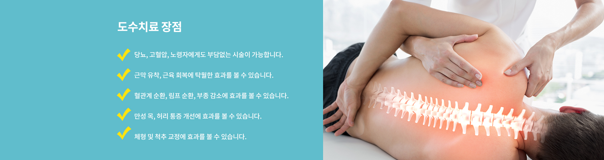
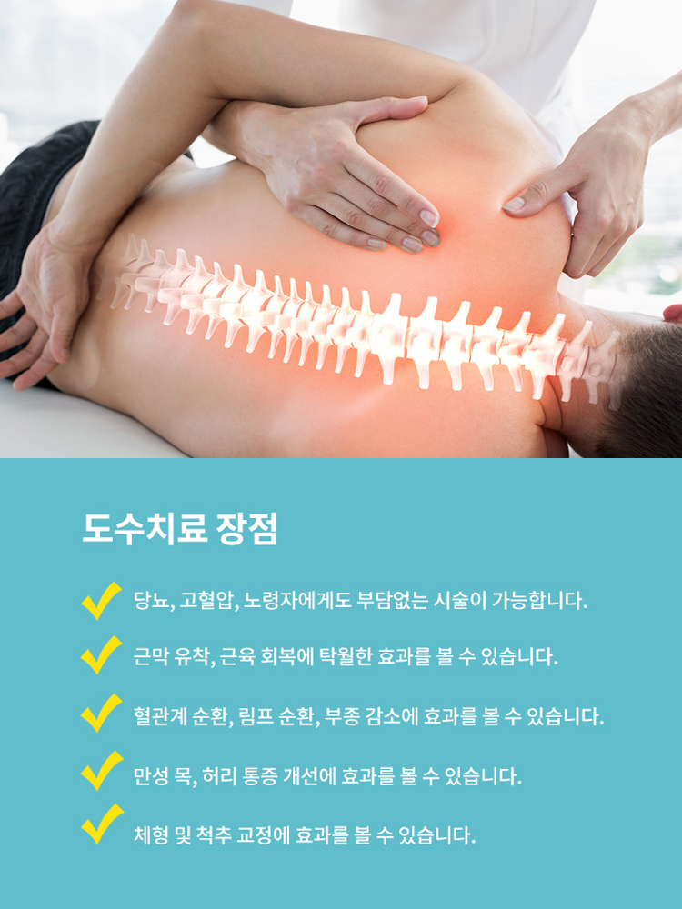
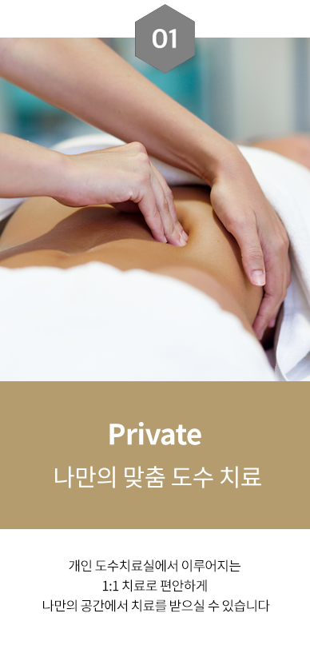
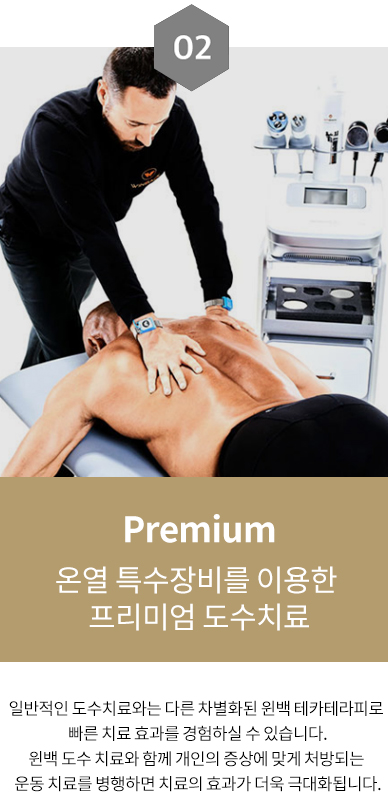
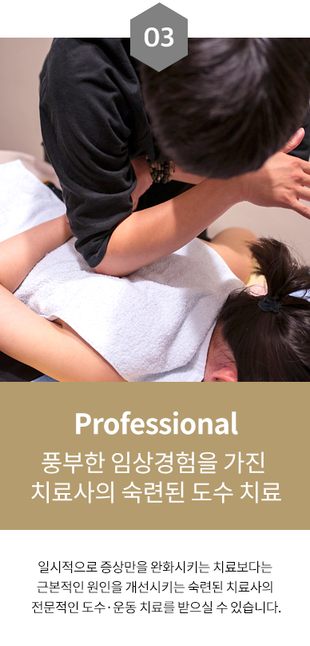
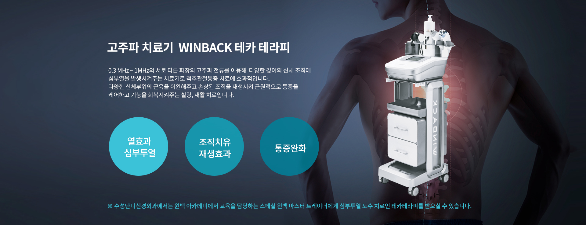
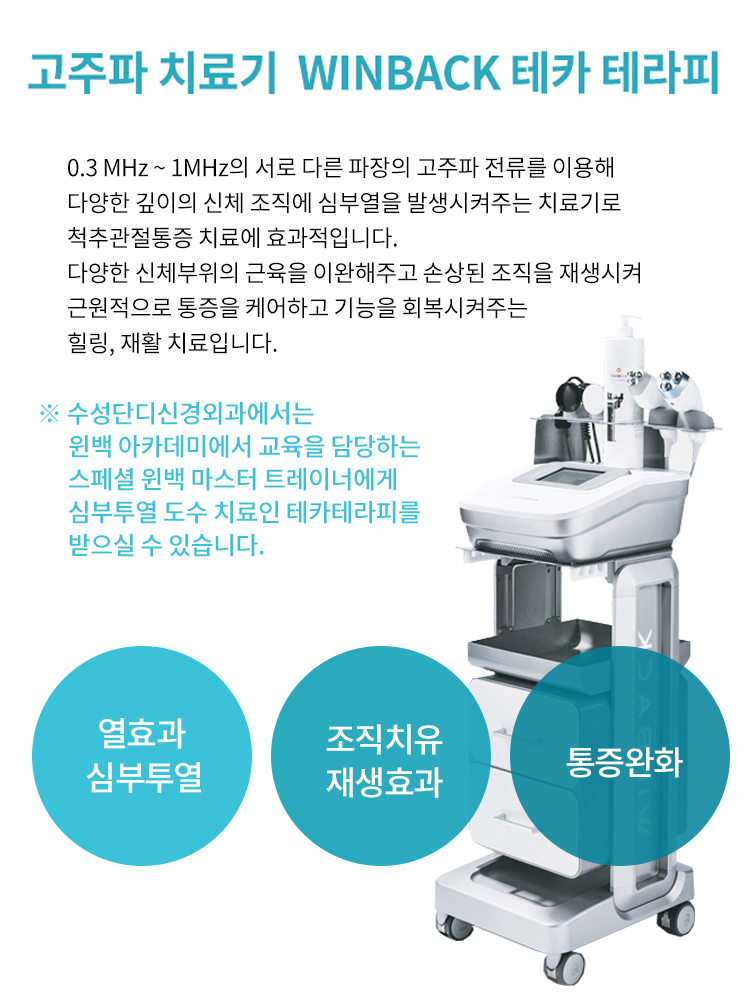
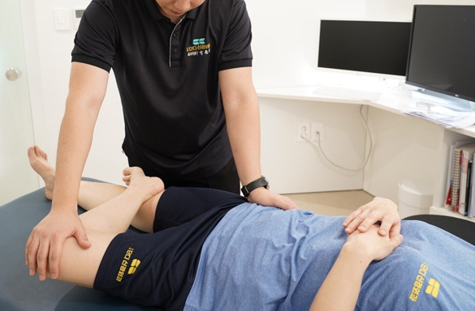
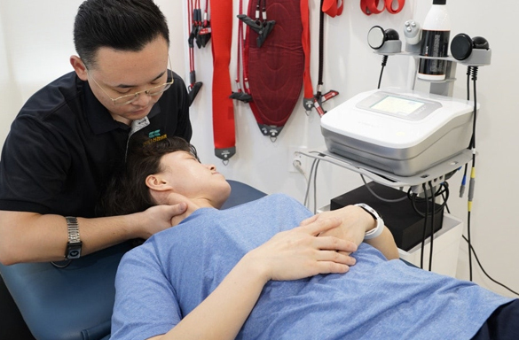

재활/교정 클리닉 치료
최첨단 의료장비로 정확한 진단하에
개개인 맟춤 치료를 시행합니다.
도수 치료
SUSUNG DANDI NEUROSURGERY
통증치료, 척추기능 회복
도수치료는 비틀어진 척추와 골격을 바로 잡아 근육과 신경의 기능을 정상화하는 기법으로,
빠르게 근골격계의 문제를 개선함과 동시에, 몸의 정상적인 기능을 회복하는데 있어서 기초가 되는 기법입니다.


단디만의 특별한 "3P" 도수 치료
- 
- 
- 


- 
- 
도수 치료 대상
-
척추 질환
- 허리디스크
- 척추협착증
- 근육통
- 그 외 -
자세 및 체형
- 자세 불균형
- 오다리
-
경추 및 흉추 질환
- 거북목
- 일자목
- 목 디스크
- 어깨 결림 -
관절 질환
- 오십견
- 류마티스 관절염
- 퇴행성 관절염
- 손목 통증
- 무릎 통증